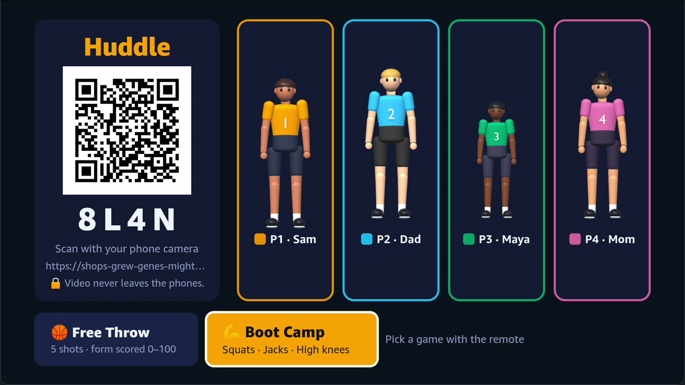
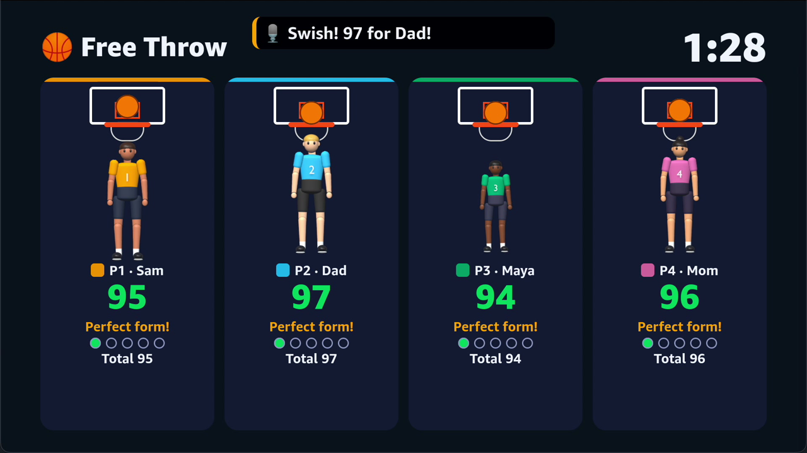
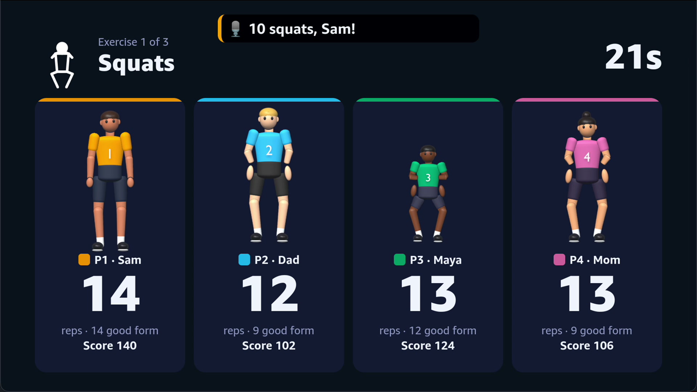
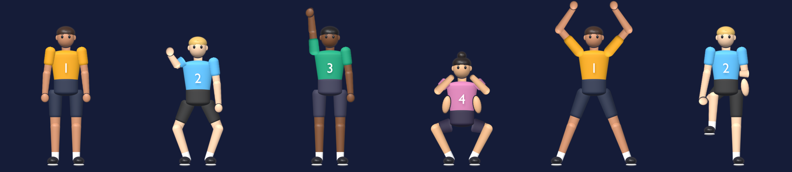

A living-room sports & fitness party game for Fire TV (Vega OS). Up to four players, no extra hardware, and no video ever leaves the phone.
Fire TV has no camera, so motion games, fitness form feedback and sports coaching are off the table.
Today's options are Kinect-style cameras, smart mirrors or $300+ fitness devices, all extra kit for one room.
Phone fitness apps are single-player and live on a 6-inch screen, which doesn't work for family game night.
Each player scans the code on the TV. It opens a web page, so there's no app install and no account.
MediaPipe Pose runs on the phone and tracks 33 body points in real time.
Only keypoints stream to the TV at 15 fps. The TV is the shared arena, with live scoring and an AI coach.



Mime a free throw. Each shot is scored on elbow set angle, elbow alignment, knee bend, arm extension and follow-through, with a tip like "Elbow in!"
Squats → jumping jacks → high knees, 40 s each. Every threshold is an angle or a body-relative ratio, so a 9-year-old can fairly beat their dad.
getUserMedia + MediaPipe PoseLandmarker (WASM/GPU, CPU fallback). EMA smoothing, calibration, scoring at full frame rate.
Rooms, QR codes, zod validation, 16 KB caps, 40 msg/s rate limits. Built on the open-source pose-relay library.
React Native for Vega 0.83. Authority for rounds, timers and totals. D-pad focus, Back/Menu keys, W3C Media audio.
Round summary (numbers only) → Amazon Bedrock (Claude via Converse) → ≤ 40-word commentator line → Amazon Polly neural MP3 → TV. AWS credentials never reach a client.
50 unit tests (protocol, scoring, rep counters, rig, rooms, TV logic) and strict TypeScript across the monorepo. Runs on the Vega Virtual Device.
Four stylized 3D characters modeled in Blender, rendered as shaded body-part sprites and driven by a cutout rig from the 33 landmarks every frame. They run in real time on Vega with plain Image views.

| Service | How Huddle uses it |
|---|---|
| Amazon Bedrock Converse API | After each round the relay sends scores, ranks and the best and weakest form component (numbers and sanitized names only). Claude returns a family-friendly line that names the winner and gives one concrete tip. |
| Amazon Polly neural, MP3 | Voices the coach line, which the TV plays through the Vega W3C Media AudioPlayer with a caption. Boot Camp callouts are synthesized once at startup. |
| EC2 / Lightsail | Hosts the relay container behind Caddy TLS. App Runner was ruled out because it lacks WebSocket support (logged in our friction log). |
| IAM | Least privilege: only bedrock:InvokeModel and polly:SynthesizeSpeech. |
frames of video or images leave the phone. Only 33 × (x, y, visibility) numbers do.
accounts. Names live in memory for the room's lifetime only.
outbound phone message types (join, pose, event, ping). The relay drops everything else.
message cap, 40 msg/s rate limit and zod validation on every inbound message.
It works on any Fire TV on Vega OS, using phones people already own.
Transport-agnostic room manager: 4-letter codes, session-token rejoin, heartbeats, rate limits, pluggable validation. About 170 lines with no dependencies.
getUserMedia + MediaPipe PoseLandmarker (GPU → CPU fallback) produces mirrored, aspect-corrected keypoints ready for angle math.
Any Fire TV, React Native or web big-screen app can add private multi-player motion sensing in an afternoon. MIT licensed, with a minimal example. Huddle is built on it.
11 friction-log entries with severity, workaround and suggestion: see FRICTION_LOG.md
vega device key / screenrecord (nice-to-have)Code: github.com/faazkhn/Huddle · MIT licensed
Demo: youtu.be/hY2PGKhZ_bg
Library: github.com/faazkhn/Huddle/tree/main/packages/pose-relay
Status: runs end-to-end on the Vega Virtual Device with simulated players and a ?sim=1 phone page. The live Bedrock + Polly path is implemented but was not run during the build, which had no AWS credentials; the caption fallback was verified.